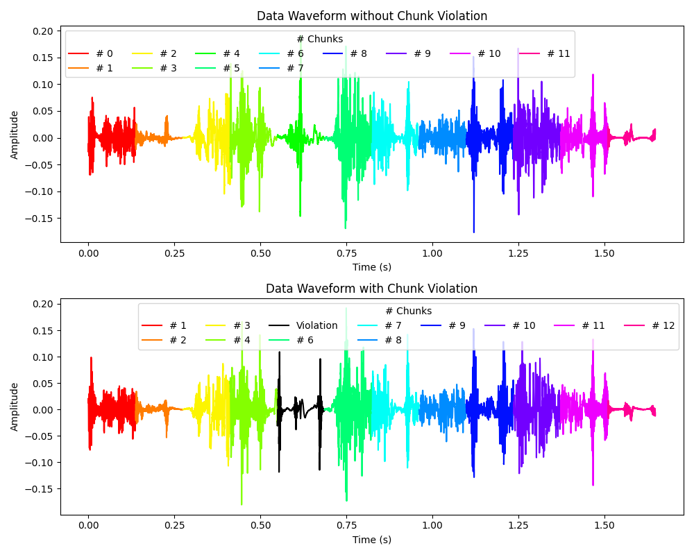
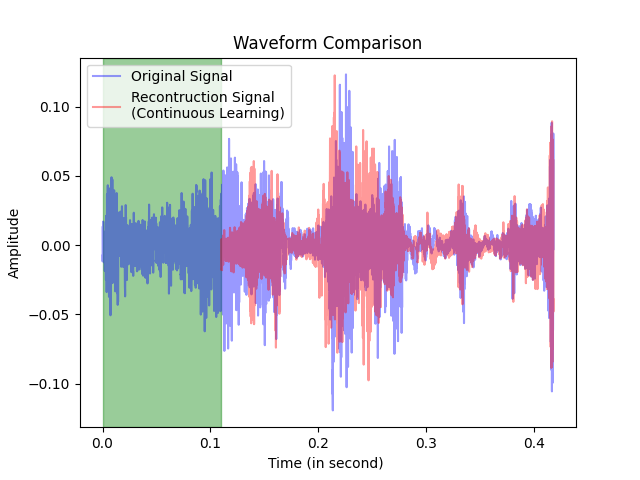
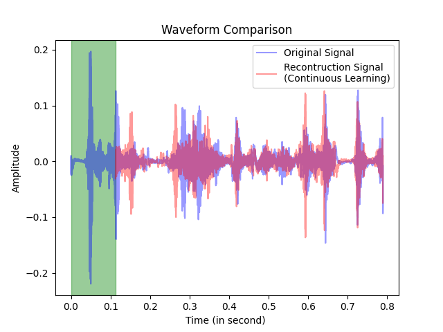

"Global-Sequence-Sensitive Mechanism: Detection of Rank-Level Violation" Section Media

Corresponding Original Audio
Corresponding Audio with Violation
"Continuous Sequence Generation Using a Fixed-Size Sliding Window" Section Media

Corresponding Original Audio
Reconstructed Audio

Corresponding Original Audio
Reconstructed Audio
Swap n-gram Section Audio Samples (time window extended by ±5 for better audibility)